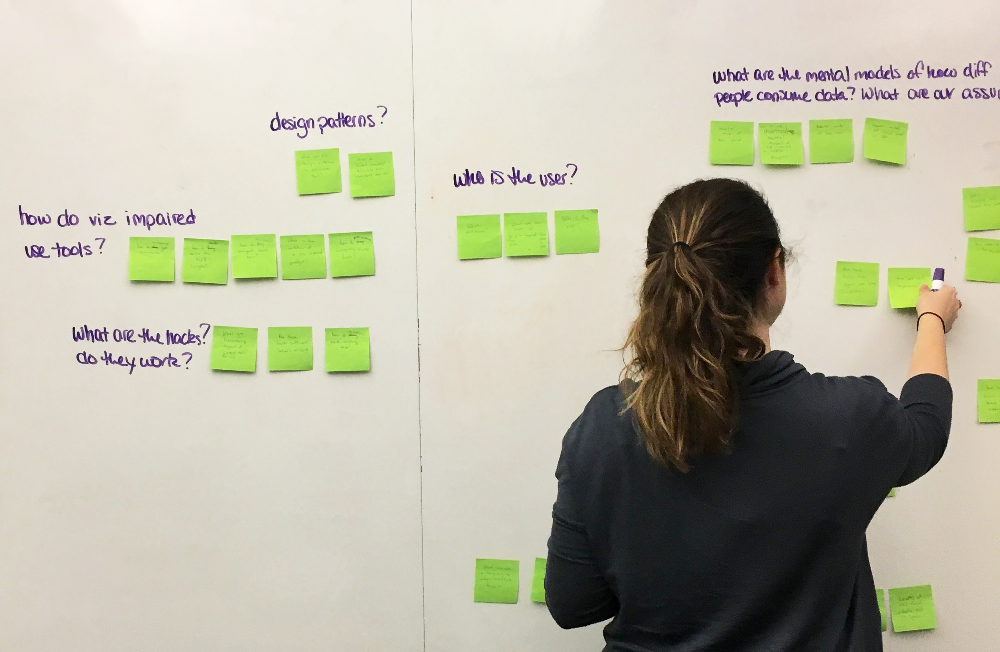

MHCI Capstone + Bloomberg LP
This is my capstone project for Carnegie Mellon’s Masters in Human-Computer Interaction Program. For this project my team worked closely with Bloomberg to try to make financial visualizations more accessible to those who are visually impaired.
Click here For more information about our prototyping and development process.
| Year: | 2016 / 2017 |
| Client: | Bloomberg LP |
| Role: | Tech Lead |
| Duration: | 9 Months |
The Problem Space
Visual cues in charts are essential in financial decision-making. The sudden plummet of a stock price, the steady rise of an index fund, the outlier within a sector: these are all visual triggers that sighted finance experts regularly use to identify investment opportunities.
Because many financial data visualizations lack the necessary alternate text to be read by screen readers, people with visual impairments (PWVI) are at a huge disadvantage when it comes to making financial decisions as crucial information is being withheld.
For our masters' capstone project, we were asked to explore the domains of finance and visual accessibility, with the goal of giving PWVI better access to financial visualizations.
Our Goals
In our domain analysis, we saw that “people with visual impairments in finance” encompasses people across the spectrums of sight and prior financial knowledge. We scoped our focus to the following goal:
We want to create a user interface to help financially literate people who are blind confidently investigate market trends to identify ideal entry/ exit points for investment decisions.
Our Questions
Before we could design a user interface, we had to fully understand both the accessibility and financial visualizations domains. Some of our guiding questions for our research process were:
- How do people with visual impairments understand and use data?
- What data and visualizations are most important to finance experts?
- How do people across the sighted spectrum communicate with each other?
Research Process
Question Storming: We worked with our client to create a list of questions to set the project scope.
Empathy Exercise: After researching best practices in empathy exercises, we targeted our exercise to familiar finance tasks using a screen reader, creating a protocol designed to reduce prejudice and better understand the barriers that PWVI face.
Literature Review: We read a large assortment of academic research papers on topics ranging from accessibility, vision loss, cognition, and data visualization.
Emerging Tech Survey: We did an emerging technology survey to make sure we were apprised of new technologies that could help our users, such as haptic and tactile interfaces and 3D sound and data sonification experiments.
Early Prototyping: We created early prototypes to explore the forms of potential solutions. We experimented with tactile materials and audio cues, testing internally with blindfold simulation to identify directions for higher fidelity prototyping and user testing.
Expert Interviews: We conducted interviews with accessibility and emerging technology researchers as well as industry accessibility and finance technologists in order to get a better understanding of our problem space.
User Interviews: We conducted six interviews with finance experts and 10 interviews with users who are legally blind, five from birth or childhood and five who lost their sight later in life.
Interpretation Sessions: In order to synthesize findings from our user interviews, we interpreted our notes by modeling user workflows and identifying user breakdowns and attitudes.
Affinity Diagram: From over 600 notes created in our interpretation sessions, we clustered notes into layers of logical groupings developed from the bottom up. Notes were color coded by the user type in order to see which clusters applied to both sighted finance experts and PWVI.

Research Insights
- People who help me are interfaces, too.
The transfer of information by a sighted individual is subject to that person’s interpretation and expertise. - My AT can only provide one piece of info at a time.
It’s hard to view all parts of the puzzle at once because screen readers only provide one piece of information at a time. - I use charts as a communication tool.
Highlighting visual cues in charts is the easiest way to persuade colleagues and clients of investment decisions. - There is no normal.
Both PWVI and finance experts depend on their idiosyncratic workflows to get things done. - Changing tools is hard, so it better be worth it.
A product must offer a meaningful improvement to justify altering a hard-earned workflow. - I use visuospatial metaphors as mnemonics.
Visual and spatial reference points help bridge communication between sighted and blind colleagues.
Opportunity Spaces
From our research and insights, we narrowed down to the following opportunity spaces:
Context for Visualizations
- Provide better descriptions of charts
- Create a bridge between visuals and language
Control in Data Navigation
- Provide PWVI the ability to “jump around”
- Allow users to dive in deeper
- Prototype multi-modal tools
- Ensure that data is laid out correctly
- Equally useful for sighted financial experts
- Help sighted and PWVI communicate
- Share data and visualizations
Confidence in Data Accuracy
Communication of Data
Product Design
Using our research, we began to rapidly generate as many ideas as possible in order to get a wide breadth of ideation. We then voted on the most promising ideas, and plotted them on a matrix that addressed the difficulty and impact of each idea. From this impact/difficulty matrix, we narrowed down to twelve ideas which we then rapidly prototyped and tested them with employees at Bloomberg.
From the results of our testing, we scoped down to one of our prototypes that allowed users to traverse through sonified price data, but in order to determine the best modality for this traversal we prototyped three different versions using a knob, keyboard, and drawing tablet. After user-testing these prototypes with people with visual impairments, we found that a keyboard system both made the most sense for the existing financial expert workflow and enabled users to navigate without purchasing any additional hardware. During this testing we also found that in order to allow our users to make meaningful financial decisions, we needed to provide more context to the price history.
In order to achieve this, we pivoted to sonifying the relationship between the price and a study or analysis over time. For the sake of our prototype and testing we used the 50 Day Simple Moving Average. We decided to build our solution as a web-based final product that it could be easily accessible on any operating system, and eventually across platforms (desktop, phone, tablet. etc.). We user-tested our final product with both people with visual impairment and sighted finance experts, and found that both were able to pick up on nonvisual cues about the changing trends in a security’s price history.
Stockgrok
Our final product can be found here .
.
Click here for more information about how we developed Stockgrok.
Team

From left to right: Conrad Bassett-Bouchard, Emily Saltz, Nora Tane, Clare Carroll, and Jayanth Prathipati.